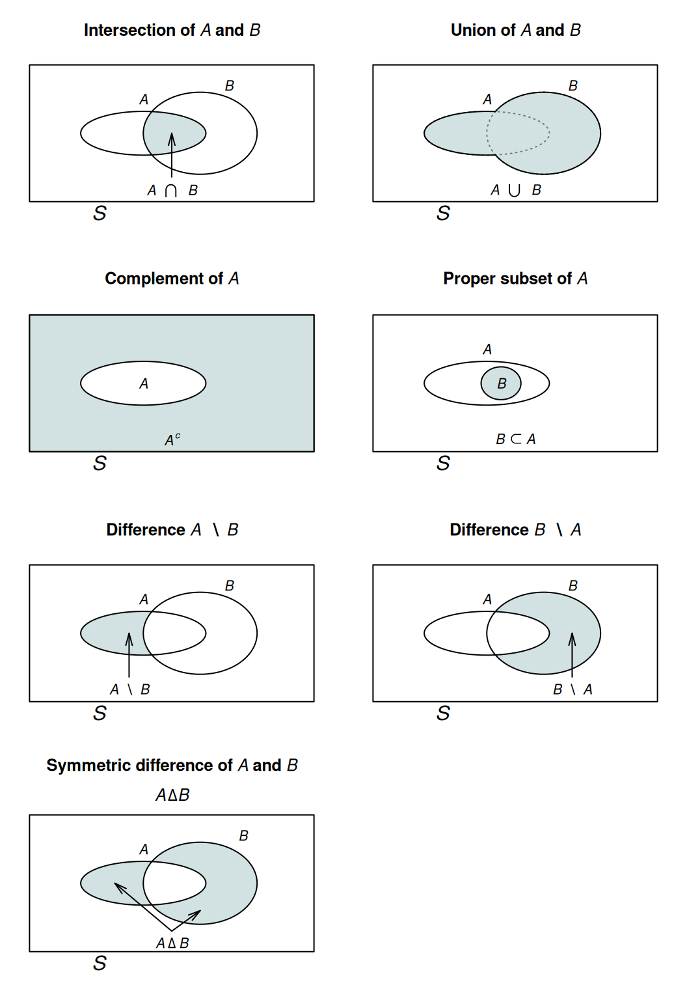

2 Essentials of set theory
Upon completion of this chapter you should be able to:
- define sets, and define elements of sets.
- define the cardinality of sets.
- perform basic set operations.
2.1 Introduction to sets
The basis of probability is working with sets. Informally, a set is simply a collection of objects.
Definition 2.1 (Set) A set is a well-defined, unordered collection of distinct elements.
In this definition, ‘distinct’ means that there is no concept of repeated elements in a set. Also, notice that a set is an ‘unordered’ collection: the order of the elements in the set is irrelevant. ‘Well-defined’ means any object must clearly belong to the set, or not belong to the set.
Sets are usually denoted using a capital letter, such as \(A\). Sets can be finite, countably infinite, or uncountable; the distinctions are discussed further in Sect. 2.4.
Example 2.1 (Sets) Consider these two sets: \[\begin{align*} A &= \{\text{Brisbane}, \text{Sydney}, \text{Hobart}, \text{Melbourne}, \text{Adelaide}, \text{Perth}\};\\ B &= \{\text{Hobart}, \text{Melbourne}, \text{Perth, }\text{Brisbane}, \text{Sydney}, \text{Adelaide}\}. \end{align*}\] These two sets are equal, since the order of the elements does not matter: both sets contain six distinct elements (‘Australian state capital cities’). We can write \(A = B\).
In contrast, \[ C = \{\text{Brisbane}, \text{Sydney}, \text{Hobart}, \text{Sydney}, \text{Hobart}, \text{Hobart} \} \] contains redundancy; the elements ‘Sydney’ and ‘Hobart’ are repeated. By definition, repeated elements in sets are redundant, so \(C\) is equivalent to writing \[ C = \{\text{Brisbane}, \text{Sydney}, \text{Hobart} \}. \]
For some sets, listing the individual elements is possible, when the individual elements are denoted with lower-case letters: \[ A = \{ a_1, a_2, a_3, a_4\}. \]
The symbol ‘\(\in\)’ denotes that an element is a member of a set; the symbol ‘\(\notin\)’ is used to denote that an element is not a member of a set. If \(a\) is an element of the set \(A\), we write \(a \in A\), and we say ‘\(a\) is an element of set \(A\)’. However, listing the elements like this is not always possible (e.g., for uncountably infinite sets).
Example 2.2 (Elements of sets) For set \(A\) in Example 2.1, we can write \[ \text{Hobart} \in A \] to indicate that ‘Hobart’ is a member of set \(A\). Similarly, we can write \[ \text{Canberra} \notin A \] to indicate that ‘Canberra’ is not a member of \(A\).
Set elements can be interpreted broadly, and can refer to letters, digits, names, suits in a pack of cards, numbers, words, animals, people, machine components, plants… or even other sets.
Example 2.3 (Examples of sets) Define the set \(M\) as: \[ M = \{\text{Echidnas}, \text{Platypuses}\}; \] \(M\) is the set of all known monotremes. Set \(M\) has two elements and, for example, \(\text{Echindna}\in M\).
Also, define the set \(D\) as \[ D = \{1, 3, 5, 7, 9\}, \] the set of all odd digits. Set \(D\) has five elements.
Then, we could define the set \(W\) as: \[ W = \{ M, D\} = \{ (\text{Echidnas}, \text{Platypuses}), (1, 3, 5, 7, 9)\}. \] The set \(W\) contains two elements: set \(M\) and set \(D\).
2.2 Defining the elements of sets
Elements of a set can be defined in several ways:
- Enumerating: listing all the individual elements.
- Description: specifying a property that all elements share.
- Using a rule: defining a precise condition that determines set membership.
Regardless of the method used, any given object must be clearly a member of the set or not a member of the set.
Example 2.4 (Elements in a set) Set \(A\) in Example 2.1 lists its elements explicitly. Alternatively, \(A\) could be defined by a description, by stating ‘the set of capital cities in Australian states’.
‘Canberra’ is not an element of \(A\), since Canberra is not an Australia state capital.
Example 2.5 (Defining elements of a set) Define the set \(L\) as ‘all books at the local library with more than two authors’. Listing all elements is impractical, but the rule clearly determines membership: any book either satisfies the condition (and belongs to \(L\)) or does not.
2.3 Specific sets
Some sets are standard in mathematics and probability, and have special names or symbols.
Definition 2.2 (Empty set) The null set, or the empty set, has no elements, and is denoted by \(\varnothing\).
The set itself is denoted \(\varnothing\), which contains zero elements.
Definition 2.3 (Universal set) The universal set is the set of all elements under consideration in a specific context. It is often denoted by \(S\), \(U\) or \(\Omega\).
Example 2.6 (Universal sets) The universal set is the set of all objects currently under discussion, so it depends on context.
If we are talking about people in a room, \(U\) is the set of all people in the room. If we are talking about integers, \(U\) is the set of all integers. If we are talking about dealing cards, \(U\) is the set of all cards in the pack.
In practice, a universal set is almost always defined. Theoretically, unrestricted universal sets lead to paradoxes such as Russell’s paradox.
Russell’s paradox, discovered by Bertrand Russell in 1901, arises from considering this set: \[ R = \{ \text{all sets that are not members of themselves} \}. \] Then:
- If \(R\in R\), then (by definition) \(R\notin R\), which is a contradiction.
- If \(R\notin R\), then (by definition) \(R\in R\), which is a contradiction.
Both cases lead to a contradiction. Modern set theory (such as ZFC) restricts sets formation to avoid such paradoxes.
Example 2.7 (Null set) Consider rolling a standard six-sided die and observing the uppermost face. The universal set is \[ U = \{1, 2, 3, 4, 5, 6\}. \] The set of rolls greater than \(4\) is \[ B = \{5, 6\}. \] The set of rolls greater than \(10\) contains no elements, and so \[ C = \varnothing. \] We do not write \(C = \{\varnothing\}\); the symbol \(\varnothing\) itself represents a set (with no elements). Writing \[ C = \{\varnothing\}, \] defines \(C\) as a set with one element, and that element is the empty set.
Some commonly used sets of numbers include:
- Natural (or counting) numbers \(\mathbb{N}\): \(\{1, 2, 3, \dots\}\).
- Integers \(\mathbb{Z}\): \(\{\ldots, -2, 1, 0, 1, 2, 3, \dots\}\).
- Rational numbers \(\mathbb{Q}\), including numbers like \(1/2 = 0.5\).
- Real numbers \(\mathbb{R}\), including numbers like \(\pi\).
- Positive real numbers \(\mathbb{R}_{+}\).
- Negative real numbers \(\mathbb{R}_{-}\).
- Complex numbers \(\mathbb{C}\).
(Some authors include \(0\) in the set of natural numbers.)
2.4 Types of sets
Sets can be:
- finite, where elements can be counted; the number of elements \(n\) is finite.
- countable infinite: elements could be listed in a sequence, but there are infinitely many.
- uncountably infinite: elements cannot all be listed in a sequence.
For finite or countably infinite sets, each element is called an element.
2.4.1 Finite sets
If the number of elements in a set can be counted, the set is called a finite set. A finite set has exactly \(n\) distinct elements for some non-negative integer \(n\).
Example 2.8 (Defining elements of a finite set) Define the set \(S\) as the ‘set of suits in a standard pack of cards’. Then, \(S = \{\clubsuit, \spadesuit, \heartsuit, \diamondsuit\}\). We can write, for example, that \(\spadesuit \in S\).
The elements of the set are listed; the set has \(n = 4\) elements.
Example 2.9 (Defining elements of a finite set) Define the set \(O\) as the ‘set of odd numbers between \(0\) and \(100\)’. Alternatively, the elements of the set can defined by giving the pattern: \[ O = \{1, 3, 5, 7, 9, \dots 95, 97, 99\} \] Set \(O\) has \(50\) elements.
Example 2.10 (Finite sets) Define set \(B\) as ‘the even numbers after rolling a single die’; then,
B = {⚁, ⚃, ⚅}
The set \(B\) is finite, with three elements.
2.4.2 Countably infinite sets
If the elements in a set could (in principle) be listed without omitting any element, but an infinite number of them exist, the set is called a countably infinite set.
Definition 2.4 (Countably infinite set) A set \(A\) is called countably infinite if a bijection exists between the elements of \(A\) and the natural numbers \(\mathbb{N}\); that is, the elements of \(A\) can be listed in a sequence \(a_1, a_2, a_3,\dots\) where every element of \(A\) appears exactly once.
Example 2.11 (Countably infinite sets) Define \(S\) as the number of rolls of a die needed to roll a ⚅. The number of rolls needed could be \(1\) or \(2\) or \(3\)…, and no upper limit exists (though some numbers are very unlikely). That is, the set \(S\) is \[ S = \{1, 2, 3, 4, \dots\}. \] Set \(S\) is countably infinite.
Example 2.12 (Countably infinite sets) Define the set \(O\) as the ‘set of odd numbers’. The elements of the set can be described (‘odd numbers’), or by giving the pattern: \[ O = \{1, 3, 5, 7, 9, \dots\} \] Set \(O\) is countably infinite.
2.4.3 Uncountably infinite sets
If the elements cannot be listed without omitting elements, the set is called a uncountably infinite set.
Definition 2.5 (Uncountably infinite sets) A set \(A\) is called uncountably infinite if it is infinite but cannot be listed in a sequence \(a_1, a_2, a_3, \cdots\); that is, no matter how clever the listing, some elements will always be omitted. No bijection exists with \(\mathbb{N}\).
Example 2.13 (Uncountably infinite sets) The set \(\mathbb{R}\) refers to the positive real numbers, which is an uncountably infinite set. The elements of \(\mathbb{R}\) cannot be listed without missing some elements. For instance, an infinite number of elements exists between the elements \(0\) and \(0.0001\).
Set \(\mathbb{R}\) is uncountably infinite.
Example 2.14 (Uncountably infinite set) Consider the heights of people. Between the two heights \(173\,\text{cm}\) and \(174\,\text{cm}\), an infinite number of heights exist: \(173.1\,\text{cm}\), \(173.01\,\text{cm}\), \(173.001\,\text{cm}\), \(173.0001\,\text{cm}\), and so on.
The set of heights is uncountably infinite.
For convenience heights are rounded to (say) the nearest whole number of centimetres, or perhaps to one decimal place of a centimetre.
Since the elements of uncountably infinite sets cannot be listed—even with a pattern—the elements of uncountably infinite sets are often concisely defined using set-builder notation. (Set-builder notation can be used for any sets, but are especially useful for uncountably infinite sets.)
2.4.4 Set-builder notation
Set-builder notation usually has the format: \[\begin{align*} A &= \{ x \mid \text{some condition for $x$ to belong to the set}\}, \text{or}\\ A &= \{ x : \text{some condition for $x$ to belong to the set}\}. \end{align*}\] In this notation, \(\{\dots\}\) means that \(A\) is a set; \(x\) is a variable representing the elements of the set \(A\); the colon or vertical bar is read as ‘such that’, and is followed by the condition for \(x\) to belong to the set \(A\). Often, the notation to the left of the ‘such that’ defines the universal set for the context.
Example 2.15 (Set-builder notation) Consider the set defined by \[ A = \{x \in \mathbb{Z} \mid x > 9\}. \] This is read as ‘\(A\) is the set of all integers \(x\), such that the elements \(x\) are larger than \(9\)’.
Example 2.16 (Set-builder notation) Consider the set defined by \[\begin{align*} F = &\{s \in \text{Names of students in a certain course} \mid{}\\ &\phantom{\{x \in {}} \text{students whose mark is less than $50\%$}\}. \end{align*}\] This is read as ‘\(F\) is the set of all \(s\) drawn from the names of students in a certain course, such that \(s\) is a student whose mark less than \(50\)%’. That is, \(F\) represents the set of all students in that specific course who scored less than \(50\)%.
Example 2.17 (Set-builder notation: finite sets) Consider the set defined by \[ B = \{x \in \text{Animal species}: \text{$x$ has two legs}\} \] This is read as ‘\(B\) is the set of all animals species \(x\), such that the elements \(x\) have two legs’. We could also have written \[ B = \{x : \text{$x$ is an animal species with two legs}\} \]
Example 2.18 (Set-builder notation: finite sets) Consider the set defined by \[ V = \{x \in \text{letters in the alphabet} \mid \text{$x$ is a vowel}\}. \] This is read as ‘\(V\) is the set of all letters \(x\), such that the elements \(x\) are all vowels’.
Consider the set defined by \[ P = \{y \in \mathbb{Z} : \text{$y$ is a two-digit integer}\}. \] This is read as ‘\(P\) is the set of integers \(y\), such that the elements \(y\) are all two-digit integers’.
Example 2.19 (Set-builder notation: uncountably infinite sets) Consider throwing a cricket ball. Let \(D\) be the set of all possible distances (in metres) that the ball could be thrown; then \[ D = \{ d \in \mathbb{R} \mid d \ge 0 \}. \] Set \(D\) is uncountably infinite.
Define \(C\) as the set of ‘all possible distances travelled by cars in Europe over one year’. Set \(C\) is uncountably infinite, and can be defined as \[ C = \{c \in \mathbb{R} \mid c \ge 0 \}. \] Set \(C\) is uncountably infinite.
2.4.5 Cardinality
Cardinality denotes the number of elements in a set. Cardinality of a set \(A\) is denoted \(|A|\).
Cardinality of a finite set is the number of elements in the set. Countably infinite sets and uncountably infinite sets both have infinite cardinality, but different infinite cardinalities. Countably infinite sets have cardinality \(\aleph_0\), where \(\aleph_0\) (‘aleph-null’) is the smallest infinite cardinality. Uncountably infinite sets have cardinality \(\mathfrak{c}\) where \(\mathfrak{c}\) is the ‘cardinality of the continuum’. Cantor showed that \(\mathfrak{c} = 2^{\aleph_{0}} > \aleph_0\).
Example 2.20 (Cardinality: finite sets) Set \(S\) defined in Example 2.8 is \[ S = \{\clubsuit, \spadesuit, \heartsuit, \diamondsuit\}. \] The elements of the set are listed; the set has four elements. That is, \(|S| = 4\).
Example 2.21 (Cardinality: uncountably infinite sets) Set \(A\) in Example 2.15 is \[ A = \{x \in \mathbb{Z} \mid x > 9\}. \] The cardinality of \(A\) is \(\aleph_0\): \(|A| = \aleph_0\).
Example 2.22 (Cardinality: uncountably infinite sets) Set \(D\) in Example 2.19 is \[ D = \{ d \in \mathbb{R} \mid d \ge 0 \}. \] The cardinality of set \(D\) is \(\mathfrak{c}\): \(|D| = \mathfrak{c}\).
2.5 Operations on sets
Sets can be combined in various ways, which sometimes makes defining sets easier too. Many operations are defined for sets.
Definition 2.6 (Set operations) Consider two sets \(A\) and \(B\), and a universal set \(S\). The following operations are defined.
-
Intersection:
The intersection of sets \(A\) and \(B\), written as \(A\cap B\), is the set of elements in both \(A\) and \(B\): \(A\cap B = \{x \mid x\in A \text{ and } x \in B\}\). We often say \(A\) and \(B\). -
Union:
The union of sets \(A\) and \(B\), written as \(A\cup B\), is the combined set of all the elements in either \(A\) or \(B\), or in both: \(A\cup B = \{x \mid x\in A \text{ or } x \in B\}\). We often say \(A\) or \(B\). -
Complement:
The complement of set \(A\), written \(A^c\), is all the elements of \(S\) that are not in set \(A\): \(A^c = \{x \mid x\notin A\}\). -
Cartesian product:
The Cartesian product of \(A\) and \(B\), written \(A\times B\), is the combination of all elements of \(A\) with all elements of \(B\). For example, if \(A = \{ 1, 2\}\) and \(B = \{10, 20\}\), then \(A\times B = \{(1, 10), (1, 20), (2, 10), (2, 20) \}\). -
Difference, set difference or set subtraction:
The difference between sets \(A\) and set \(B\), written \(A\setminus B\) or \(A - B\), is all the elements in \(A\) that are not in set \(B\): \(A\setminus B = \{x \mid x\in A \text{ and } x \notin B\}\). In other words, \(A\setminus B = A\cap B^c\). Note that \(A\setminus B\) is not the same as \(B\setminus A\), in general. -
Subset:
\(A\) is a subset of \(B\), written \(A\subseteq B\), if every element of \(A\) is also an element of \(B\). Set \(B\) may have elements that are not in \(A\). -
Proper subset:
\(A\) is a proper subset of \(B\), written \(A\subset B\), if every element of \(A\) is also an element of \(B\), and set \(B\) has elements that are not in \(A\). - Symmetric difference: The symmetric difference of sets \(A\) and \(B\) is written as \(A\Delta B\), and is the combined set of all the elements in either \(A\) or \(B\), but not in both. By definition, \(A\Delta B = (A\setminus B) \cup (B\setminus A)\). This operation is also called exclusive or.
Two sets whose intersection is the empty set (i.e., \(A\cap B = \varnothing\) for two sets \(A\) and \(B\)) are called disjoint sets.
Other common notations for the complement of a set \(A\) include \(\overline{A}\) or \(A'\).
Be careful using and and or. In general conversation, and can mean the intersection or the union, depending on the context. For example:
- ‘People who are female and aged under \(20\): please stand.’
The context means ‘intersection’: being ‘female’ (say, \(F\)) and being ‘aged under \(20\)’ (say, \(T\)) both apply to the same individual. The sentence refers to \(F\cap T\).
- ‘Engineers and doctors: please stand.’
The context means ‘union’: people who are engineers (say, \(E\)), or people who are doctors (say, \(D\)), or both. The sentence refers to \(E \cup D\). In this sentence, and is combining two groups of people, not two conditions on the same people.
Similarly, in everyday speech or can be inclusive (one, the other, or both) or exclusive (one, or the other, but not both). For example,
- ‘Do you have milk or sugar in your coffee?’
The context means inclusive or, as defined above. Taking sugar (say, \(S\)) and taking milk (say, \(M\)) are combined as \(S\cup M\): you may take milk, you may take sugar, but you may also take both.
- ‘Answer this quiz using true or false’.
The context here means exclusive or. Answering true (say, \(T\)) and answering false (say, \(F\)) are combined as \(T \Delta F\): it means to answer with true, or with false, but not both.
Context matters! In the context of sets in mathematics and statistics, \(A\) and \(B\) always means \(A \cap B\) (intersection), and \(A\) or \(B\) always means \(A\cup B\) (union).
Example 2.23 (Relationships between sets) Suppose we define these sets: \[\begin{align*} C &= \{ 0, 1, 2, 3, 4, 5\};\\ D &= \{ 4, 5, 6, 7\};\\ E &= \{ 6 \}. \end{align*}\] Then: \[\begin{align*} C \cap D &= \{ 4, 5\}; & C \cup D &= \{ 0, 1, 2, 3, 4, 5, 6, 7\};\\ E &\in D; & E &\notin C;\\ C \cap E &= \varnothing; & D \cap E &= D;\\ C\setminus D &= \{0, 1, 2, 3\}; & D\setminus C &= \{6, 7\};\\ C\Delta D &= \{0, 1, 2, 3, 6, 7\}. \end{align*}\]
Example 2.24 (Relationships between sets) Suppose we define these sets: \[\begin{align*} U &= \{\text{All the digits}\} = \{ 0, 1, 2, 3, 4, 5, 6, 7, 8, 9\};\\ B &= \{ 6, 7, 8, 9\};\\ E &= \{ 2, 4, 6, 8\}. \end{align*}\] Here, \(U\) is the universal set, the set of all digits, Then, for example: \[\begin{align*} U \cap B &= \{ 6, 7, 8, 9 \} = B; & B \cup E &= \{2, 4, 6, 7, 8, 9\};\\ B &\in U; & U &\notin B;\\ B \cap E &= \{6, 8\}; & U \cup E &= U;\\ B \setminus E &= \{7, 8, 9\}; & E\setminus U &= \varnothing;\\ B\Delta E &= \{2, 4, 7, 9\}; & E^c &= \{0, 1, 3, 5, 7, 9\}. \end{align*}\]
Example 2.25 (Relationships between sets) Consider the set \(A\) defined using set-builder notation as: \[ A = \{ x \in \mathbb{R} \mid \sqrt{x^2 - 4} \in \mathbb{R}\}. \] This means that the set \(A\) comprises the real elements \(x\) such that the values of \(\sqrt{x^2 - 4}\) are real numbers; that is, such that \(x^2 - 4 \ge 0\). Alternatively \[ A = \{ x \in\mathbb{R} \mid (-\infty, -2] \cup [2, \infty)\}. \]
The square brackets ‘\([\)’ and ‘\(]\)’ indicate the value is included in the interval, where as round brackets ‘\((\)’ and ‘\()\)’ indicated the value is not included in the interval.
When an interval extends to infinity, it must always use round brackets; for example, \[ (-\infty, -2] \quad\text{and}\quad [2, \infty) \] as used above. This is because \(\infty\) and \(-\infty\) are not real numbers, but symbols representing unboundedness. Since they are not elements of \(\mathbf{R}\), they cannot be included in any set, and square brackets are never used with infinity.
Example 2.26 (Set operations) We can define \(\mathbb{N}_0 = \{ 0 \} \cup \mathbb{N}\).
We could write \(\mathbb{Q} = \{\frac{m}{n}\mid m\in\mathbb{Z}, n \in \mathbb{Z}, n\ne 0\}\).
We can also write \(\mathbb{Z} \in \mathbb{R}\), but \(\mathbb{R} \notin \mathbb{Z}\).
Example 2.27 (Sets can be two-dimensional) Sets do not have to be one-dimensional. We could define the set \(P\) as \[ P = \{(x, y)\in \mathbb{R}\times\mathbb{R} \mid (0 < x < 1)\cap(0 < y < 1) \}, \] where \(\mathbb{R}\times\mathbb{R}\) means ‘the ordered pairs \((x, y)\) where both \(x\) and \(y\) are real numbers’. \(P\) defines a unit square on the Cartesian axes.
2.6 Venn diagrams
Venn diagrams provide a visual way to represent sets and their relationships. A rectangle represents the universal set \(S\), and closed curves inside it (such as circle or ellipses) represent subsets. Shaded regions indicate the elements belonging to a particular set or operation.
The visual representations of many of the basic set operations from Sect. 2.5 (Def. 2.6) are shown in Fig. 2.1.

FIGURE 2.1: Venn diagrams showing intersection, union, complement, proper subset, set differences and symmetric difference. The rectangle represents the universal set, \(S\).
2.7 Set algebra
Set algebra has many laws; we only provide some. For sets \(A\), \(B\) and \(C\) defined on the universal set \(S\) these laws are defined.
The commutative laws are:
- \(A\cup B = B \cup A\)
- \(A\cap B = B \cap A\)
- \(A\Delta B = B\Delta A\)
- \(A\setminus B \ne B\setminus A\) in general
The associative laws are:
- \(A\cup(B\cup C) = (A\cup B)\cup C\)
- \(A\cap(B\cap C) = (A\cap B)\cap C\)
- \((A\Delta B)\Delta C = A\Delta (B\Delta C)\)
The distributive laws are:
- \(A\cap (B\cup C) = (A\cap B)\cup (A \cap C)\)
- \(A\cup (B\cap C) = (A\cup B)\cap (A \cup C)\)
- \(A\setminus(B \cup C) = (A\setminus B)\cap (A\setminus C)\)
- \(A\setminus(B \cap C) = (A\setminus B)\cup (A\setminus C)\)
- \((A \cup B)\setminus C = (A\setminus C)\cup(B\setminus C)\)
- \((A \cap B)\setminus C = (A\setminus C)\cap(B\setminus C)\)
The absorption laws are:
- \(A\cup (A\cap B) = A\)
- \(A\cap (A\cup B) = A\)
- \(A\setminus \varnothing = A\)
- \(A\setminus A = \varnothing\)
- \(A\Delta\varnothing = A\)
- \(A\Delta A = \varnothing\)
The dominance laws:
- \(A\cup S = S\)
- \(A\cap\varnothing = \varnothing\)
The idempotent laws:
- \(A\cup A = A\)
- \(A\cap A = A\)
De Morgan’s law are:
- \((A \cap B)^c = A^c \cup B^c\)
- \((A \cup B)^c = A^c \cap B^c\)
Two proofs are given below to show how these laws can be used.
Example 2.28 (Using set algebra) Prove \(A\cup B = B \cup A\) (which may seem ‘obvious’).
To show this proposition, we need to show that \[\begin{align} (A \cup B) &\subseteq B\cup A\qquad\text{and also that}\\ (B \cup A) &\subseteq A\cup B. \end{align}\] Consider the first statement, and consider an element \(x\) such that \(x\in (A\cup B)\). This means that either:
- \(x\in A\), in which case \(x\in (B\cup A)\); or
- \(x\in B\), in which case \(x\in (B\cup A)\).
In either case, \(x \in (B\cup A)\) and so \((A\cup B)\subseteq B\cup A\).
The proof of the second statement is similar, and hence \(A\cup B = B \cup A\).
These set-algebra rules can be used to prove numerous other properties of sets too.
Example 2.29 (Using set algebra) Consider the statement \(A\cap (A^c \cup B)\). Set algebra rules can be used to simplify: \[\begin{align*} A\cap (A^c \cup B) &= (A\cap A^c) \cup (A\cap B)\qquad\text{(distributive law)}\\ &= \varnothing \cup (A\cap B)\qquad\text{(by definition of $A^c$)}\\ &= A\cap B.\qquad\text{(dominance law)} \end{align*}\] Thus, \(A\cap (A^c \cup B) = A\cap B\).
Example 2.30 (Using set algebra) Prove \(B\setminus (A\setminus B) = B\setminus A\).
By definition of the set difference: \[\begin{align*} B\setminus (A\setminus B) &= B\setminus(A\cap B^c)\\ &= (B\setminus A)\cup (B\setminus B^c)\quad\text{(distributive law)}\\ &= (B\cap A^c) \cup B. \end{align*}\] Applying a distributive law again: \[\begin{align*} B\setminus (A\setminus B) &= (B\cup B) \cap (A^c \cap B), \end{align*}\] and since \(B\cup B = B\), \[\begin{align*} (B\cup B) \cap (A^c \cap B) &= B \cap (A^c \cap B)\\ &= B \cap (B \cap A^c)\\ &= (B \cap B) \cap A^c\\ &= B\cap A^c, \end{align*}\] which is the definition of \(B\setminus A\).
2.8 Statistical computing with R
We introduce R by showing how to operate with sets; more general information about using R is given in Sect. D.
2.8.1 Simple example
Consider rolling a standard, fair six-sided die. Define \(A\) as the set of numbers that can be rolled on the die, \(B\) as the set of even numbers that can be rolled, and \(C\) as the numbers that can be rolled that are divisible by three.
R can be used to determine the elements in these sets, and the union and intersection of the sets.
First, we define the sets:
Die_Rolls <- 1:6 # Set A
Rolls_Even <- seq(2, 6, by = 2) # Set B
Rolls_Divisible_By_3 <- c(3, 6) # Set C
Rolls_Even # Set B
#> [1] 2 4 6
Rolls_Divisible_By_3 # Set C
#> [1] 3 6Then use R to find the intersection and union:
intersect(Rolls_Even, Rolls_Divisible_By_3)
#> [1] 6
union(Rolls_Even, Rolls_Divisible_By_3)
#> [1] 2 4 6 3
sort( union(Rolls_Even, Rolls_Divisible_By_3) )
#> [1] 2 3 4 6The function setdiff() finds the difference between two sets:
setdiff(Rolls_Even, Rolls_Divisible_By_3) # B \ C
#> [1] 2 4
setdiff(Rolls_Divisible_By_3, Rolls_Even) # C \ B: not symmetric!
#> [1] 3is.element(A, B) determines if the elements in \(A\) are contained in set \(B\):
is.element(Rolls_Divisible_By_3, Rolls_Even) # The two elements of A
#> [1] FALSE TRUE
is.element(Rolls_Even, Rolls_Divisible_By_3) # The three elements of B
#> [1] FALSE FALSE TRUE2.8.2 More involved example
The above example could be completed manually without the need to use R. However, the power of using computers is more obvious for more involved examples.
Consider the two sets: \[\begin{align*} A &= \{\text{Countries whose names have `a' as the } \textit{second} \text{ letter}\};\\ B &= \{\text{Countries whose names end with `a'}\}. \end{align*}\]
In R, the names of the countries can be found by loading the countries package (assuming it is installed):
The list of country names are in the R vector list_countries():
head( list_countries() ) # Show the first five values only
#> [1] "Afghanistan" "Åland Islands" "Albania"
#> [4] "Algeria" "American Samoa" "Andorra"First, we find the countries whose names have an a as the second letter (assuming it is always lower case); that is, we identify the elements in set \(A\):
# Find where, in the list of countries,
# a country name has an `a` in position 2:
# (Assumes the letter is lower case)
Locate_a_Second <- which( substr(list_countries(), # substr() means 'sub-string'
start = 2, # Start at letter 2
stop = 2) # End at letter 2
== "a")
Locate_a_Second # List of TRUE and FALSE for each listed country
#> [1] 17 18 19 20 39 40 41 42 43 49 77 78 85 86 101
#> [16] 115 116 119 124 125 133 134 135 136 137 138 139 140 141 142
#> [31] 143 153 154 168 169 170 171 172 179 186 187 188 189 190 191
#> [46] 192 193 194 195 196 212 219 235 241 244 247 249
# Now find the countries listed at those locations:
a_Second <- list_countries()[Locate_a_Second]
# How many countries are there whose names have an `a` as second letter?
length(a_Second)
#> [1] 57Then, we find the countries whose names end with the letter a (assuming it is always lower case); that is, we identify the elements in set \(B\).
To do this, we first need to know how long the name of each country is:
# Find the length of the name of each country in the list:
# nchar() finds the length of each country name
Length_Country_Names <- nchar(list_countries()) Then we can proceed similar to having a as the second letter of the name:
# Find where, in the list of countries, a country name has an A in last position:
locate_Ends_With_a <- which( substr(list_countries(),
start = Length_Country_Names,
stop = Length_Country_Names)
== "a")
# Now find the countries listed at those locations:
Ends_With_a <- list_countries()[locate_Ends_With_a]
# How many countries are there whose names end with an `a`?
length(Ends_With_a)
#> [1] 79Now we can find the countries whose names have an a as the second and as the last letters by finding the intersection between the two sets:
a_Second_And_Last <- intersect(a_Second,
Ends_With_a)
# How many countries are there whose names have
# `a` as second and last letters?
length(a_Second_And_Last)
#> [1] 18
# What are these countries?
a_Second_And_Last
#> [1] "Cambodia"
#> [2] "Canada"
#> [3] "Gambia"
#> [4] "Jamaica"
#> [5] "Latvia"
#> [6] "Malaysia"
#> [7] "Malta"
#> [8] "Mauritania"
#> [9] "Namibia"
#> [10] "Panama"
#> [11] "Papua New Guinea"
#> [12] "Saint Helena, Ascension and Tristan da Cunha"
#> [13] "Saint Lucia"
#> [14] "Samoa"
#> [15] "Saudi Arabia"
#> [16] "Wallis and Futuna"
#> [17] "Zambia"
#> [18] "Taiwan, Province of China"2.9 Exercises
Selected answers appear in Sect. F.1.
Exercise 2.1 Prove one of the idempotent laws in Sect. 2.7.
Exercise 2.2 Prove one of the dominance laws in Sect. 2.7.
Exercise 2.3 Consider the set of complex numbers \(\mathbb{C}\) written in the form \(a + bi\).
- Use set-builder notation to define the set of complex numbers in terms of the set of real numbers \(\mathbb{R}\).
- Adapt your notation to define the set of purely imaginary numbers \(\mathbb{I}\).
- How would you define the complex numbers, when written in polar form: \(r \exp(i\theta)\)?
Exercise 2.4 Consider the general quadratic equation \(ax^2 + bx + c = 0\) for real values of \(a\ne 0\), \(b\) and \(c\). Using set-builder notation, define:
- the universal set \(U\) in terms of \(a\), \(b\) and \(c\), which defines all quadratics.
- the set \(R\) in terms of \(a\), \(b\) and \(c\) that contains all quadratics with two equal real roots.
- the set \(Z\) in terms of \(a\), \(b\) and \(c\) that contains all quadratics with no real roots.
- the set \(S\), in terms of \(U\), \(R\) and \(Z\), that contains all quadratics with exactly one real root.
Exercise 2.5 Consider the equation \(y = \log(x^2 - 1)\) for real values of \(y\). Using set-builder notation, define:
- the set of values of \(x\) for which \(y\) has real values.
- the set of values of \(x\) for which \(y > 1\).
- the set of values of \(x\) for which \(y\) has the value zero.
Exercise 2.6 Define these sets: \[\begin{align*} S &= \{\clubsuit, \spadesuit\};\\ P &= \{ \text{Jack}, \text{Queen}, \text{King}, \text{Ace}\}\quad \text{(i.e., the picture cards)}, \end{align*}\] where \(U\) is the universal set of all cards in a pack. Using set-builder notation, define:
- the set \(B\) that contains the black picture cards.
- the set \(R\) that contains the red picture cards.
- the set \(N\) that contains the red non-picture cards.
Exercise 2.7 Define a vector \(A\) as the even numbers from \(2\) to \(20\), and vector \(B\) as all integers from \(1\) to \(10\). Write R code to find:
- the intersection of \(A\) and \(B\).
- the elements in \(A\) that are not in \(B\).
Exercise 2.8 Define a vector \(N\) as the odd numbers from \(1\) to \(51\), and vector \(M\) as all triangular numbers between \(1\) and \(51\). (Triangular numbers take the form \(n(n + 1)/2\) for integer \(n > 0\).) Write R code to find:
- all the triangular numbers between \(1\) and \(51\) inclusive, and hence the elements of set \(M\).
- the intersection of \(N\) and \(M\).
- the elements in \(N - M\), and explain what this means.
- the elements in \(M - N\), and explain what this means.
Exercise 2.9 Using set-builder notation, define set \(T\) as the values of \(x\) for which \(y = 1/x\) is a real value.
Exercise 2.10 Using set-builder notation, define set \(L\) as the values of \(x\) for which \(y = \tan x\) is a real value.
Exercise 2.11 In R, the names of all US states are contains in the built-in dataset state.name.
Using this dataset, use R to:
- find the set of US states who names begin with
W. - find the set of US states who names begin with
North. - find the set of US states who names end in
a. - find the set of US states who names end in
a, or start withW. - find the set of US states who names end in
a, and start withW. - find the set of US states who names end in
a, and do not start withW.
Exercise 2.12 In R, information about each US states in (mostly) 1977 is contained in the built-in dataset state.x77.
Using this dataset, use R to:
- find the set of US states whose average life expectancy exceeds \(70\).
- find the set of US states whose area is less than \(500\,000\) square miles.
- find the set of US states whose illiteracy rate is greater than \(2\)%.
- find the set of US states whose percent of high-school graduates is less than \(50\)%.
- find the set of US states whose illiteracy rate is greater than \(2\)%, and whose percent of high-school graduates is less than \(50\)%.
- find the set of US states whose illiteracy rate is greater than \(2\)%, or whose percent of high-school graduates is less than \(50\)%.
(To view the help for this data, type ?state.x77 in R.)
Exercise 2.13 Explain what values are contained in set \(G\), if it is defined as \[ G = \{ x\in\mathbb{R} \mid x^2 < 4\} \] What is the cardinality of set \(G\)?
Exercise 2.14 Explain what values are contained in set \(B\), if it is defined as \[ B = \{x\in\mathbb{R} \mid \lfloor x \rfloor = x\}. \] In this expression, \(\lfloor x \rfloor\) is the floor function, that rounds the value of \(x\) to the next lowest integer towards \(\-infty\) (for example, \(\lfloor \pi \rfloor = 3\), \(\lfloor e\rfloor = 2\), \(\lfloor -\pi \rfloor = -4\) and \(\lfloor -e\rfloor = -3\)).
What is the cardinality of set \(B\)?
Exercise 2.15 Show that \(A\setminus(A\cap B) = A\cap B^c\).
Exercise 2.16 Show that \((A\setminus B)^c = A^c\cup B^c\).
Exercise 2.17 Show that \((A\cup B) \cap (A\cup B^c) \cap B = A\cap B\).
Exercise 2.18 Show that \((A\cap B) \cup (A\cap B^c) = A\).
Exercise 2.19 Show that \(A\Delta B = A^c\Delta B^c\).
Exercise 2.20 Show that \((A\Delta B) = (A\cup B) \setminus (A\cap B)\).
Exercise 2.21 Suppose the set \(C\) is defined as C = {H, T} the set of results from tossing a coin. Define the set \(D\) that shows the results of two tosses of a coin, as an ordered pair. (See Example 2.27.)
Exercise 2.22 Define the following two sets: \[ S = \{\spadesuit, \clubsuit, \diamondsuit, \heartsuit\} \qquad\text{and}\qquad D = \{2, 3, 4, \dots, \text{Jack}, \text{Queen}, \text{King}, \text{Ace}\}. \] Use these two sets to define Set \(C\) of ‘all cards in a standard pack’, as an ordered pair. (See Example 2.27.)
Exercise 2.23 A hospital tests patients for three respiratory viruses: Influence (the flu) (\(F\)), COVID (\(C\)), and RSV (\(R\)). A patient is classified as ‘High Risk’ if they have at least two of these viruses simultaneously.
Write the set expression for ‘High Risk’ patient.
Exercise 2.24 Imagine a circular particle detector. Let \(S\) be the entire area of the detector. Let \(D_r\) be the set of points \((x, y)\) such that \(x^2 + y^2 \leq r^2\) (i.e., a disk of radius \(r\)).
If a particle is detected in the ‘outer ring’, between radius \(5\) and radius \(10\), express this region using \(D_5\) and \(D_{10}\) using set notation.